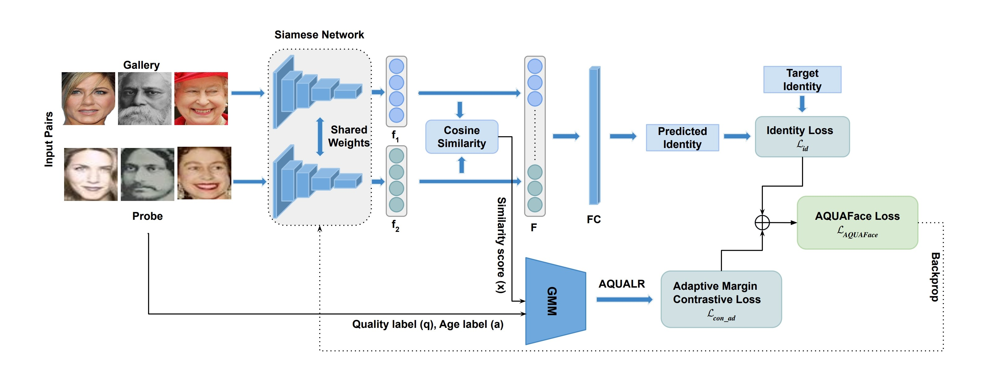
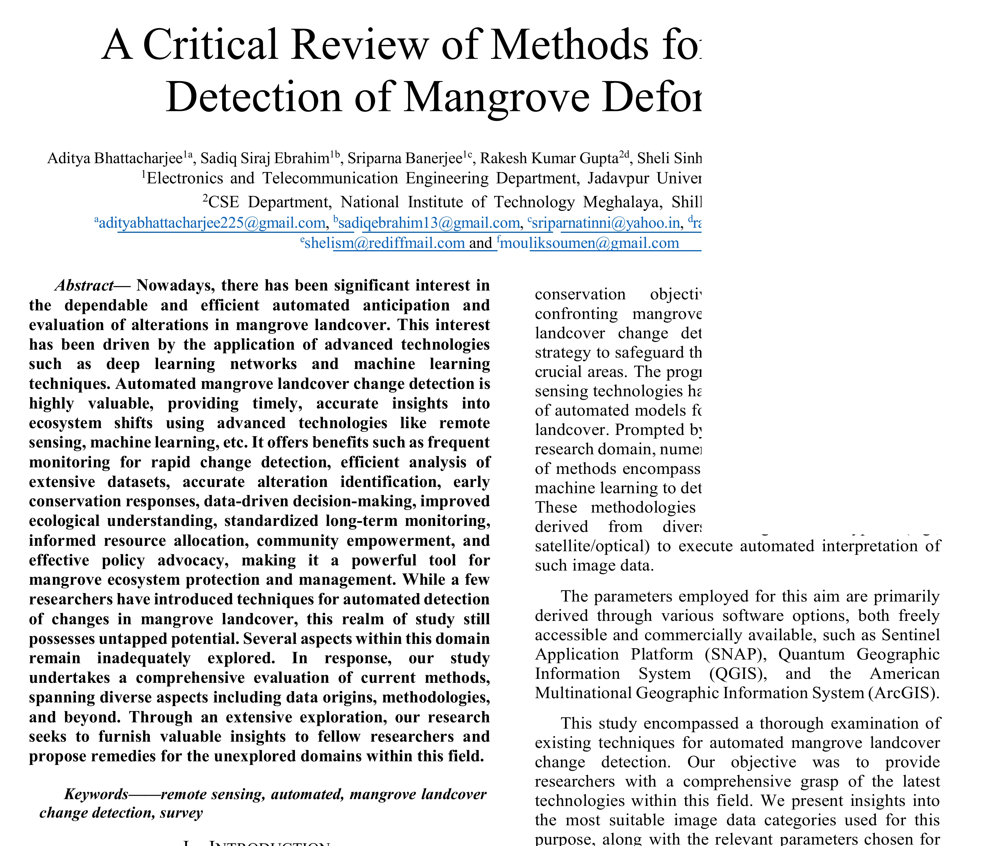
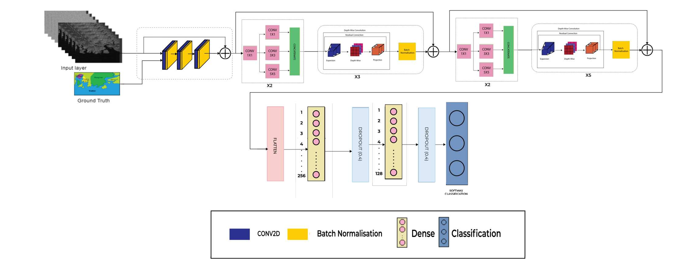

|
Sadiq Siraj Ebrahim
I am currently working as a Scientist at the Centre for Development of Telematics (C-DOT), India. Prior to this,
my research focused on computer vision and its applications in face recognition, age transformation, explainable
AI, and identity-preserving generation. I have also developed several deep learning pipelines for tasks such as
deforestation detection from satellite imagery, event detection, and neural network implementation on FPGA hardware.
Email /
CV /
LinkedIn /
Github
|
|
|

|
AQUAFace: Age-Invariant Quality Adaptive Face Recognition for Unconstrained Selfie vs ID Verification
Shivang Agarwal, Jyoti Chaudhary, Sadiq Siraj Ebrahim, Mayank Vatsa, Richa Singh, Shyam Prasad Adhikari, Sangeeth Reddy Battu
AAAI 2025
paper /
project /
code
|
|
|

|
A Critical Review of Methods for Automated Detection of Mangrove Deforestation
Aditya Bhattacharjee, Sadiq Siraj Ebrahim, Sriparna Banerjee, Rakesh Kumar Gupta, Sheli Sinha Chaudhuri, Soumen Moulik
IEMENTech 2023
paper /
|
|
|

|
SundariNet: A Multi-Scale Deep Learning Approach for Sunderban Mangrove Ecosystem Landcover Classification
Sadiq Siraj Ebrahim, Aditya Bhattacharjee, Sriparna Banerjee, Sheli Sinha Chaudhuri
WIECON-ECE 2023
paper /
|
|